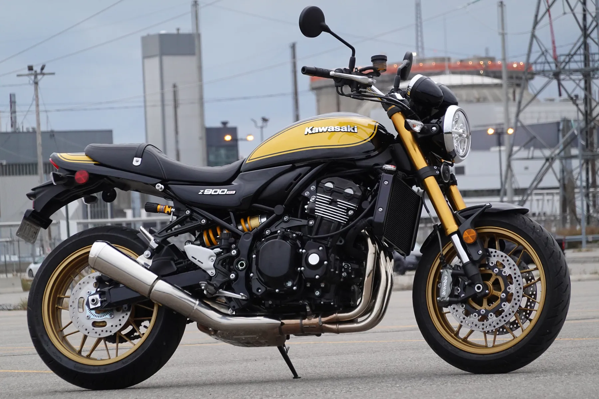
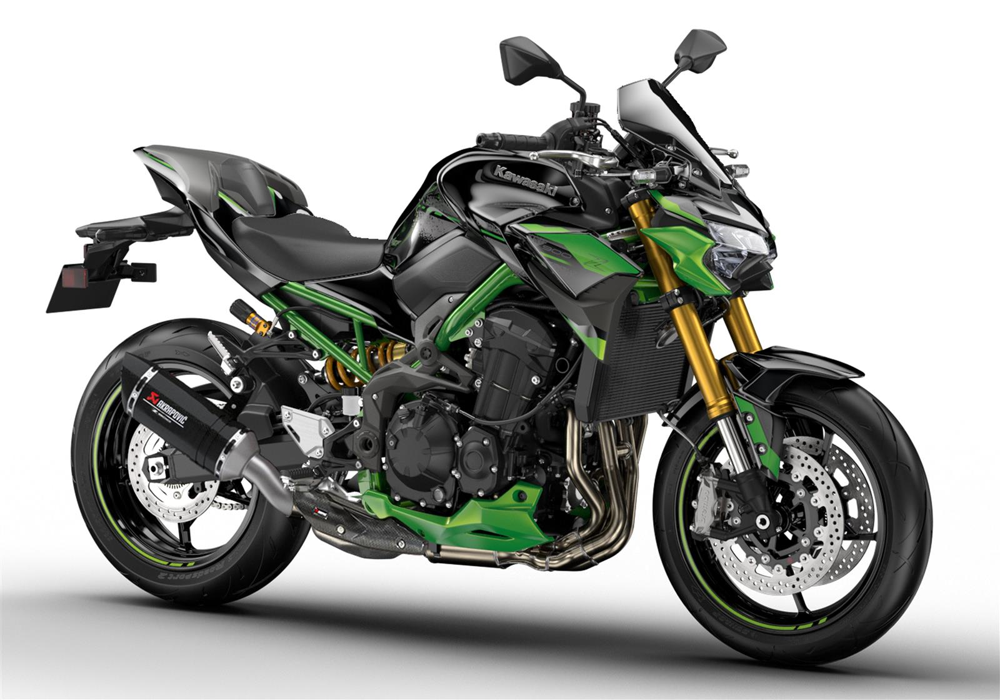
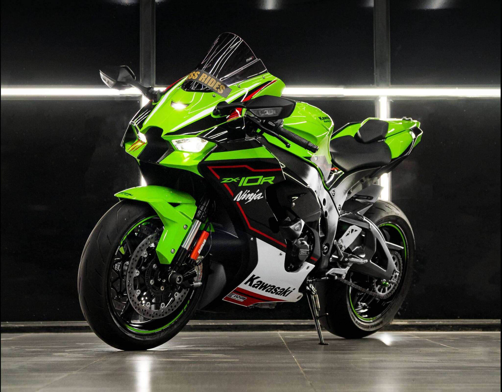
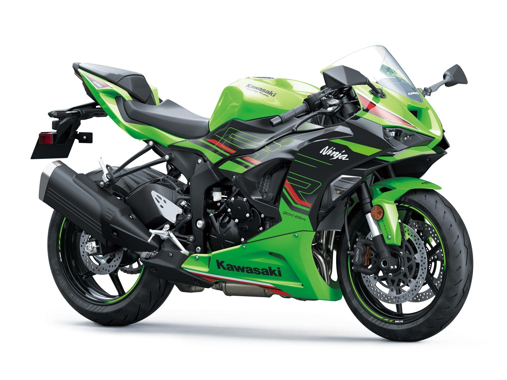
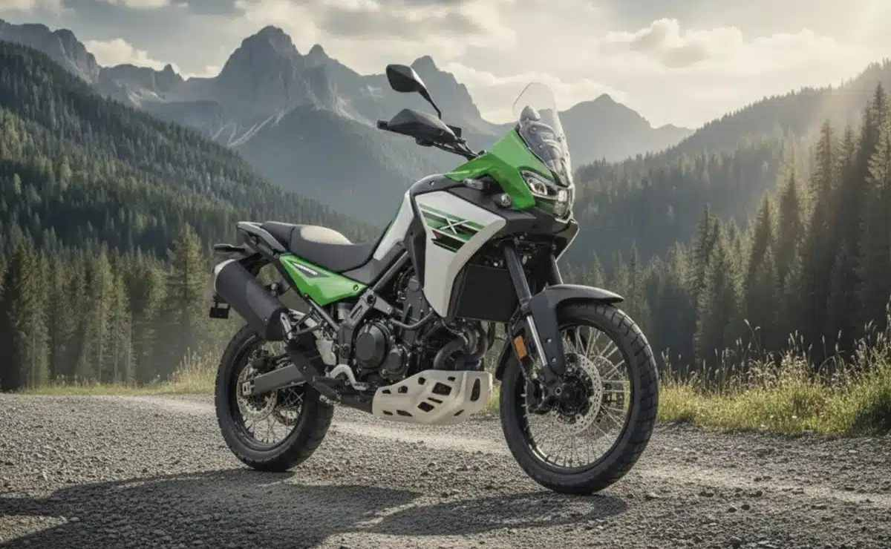
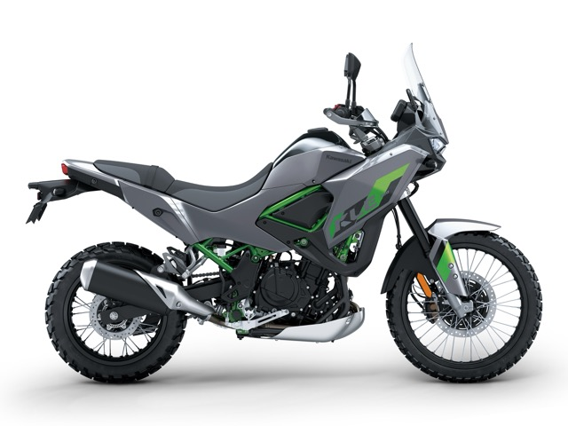
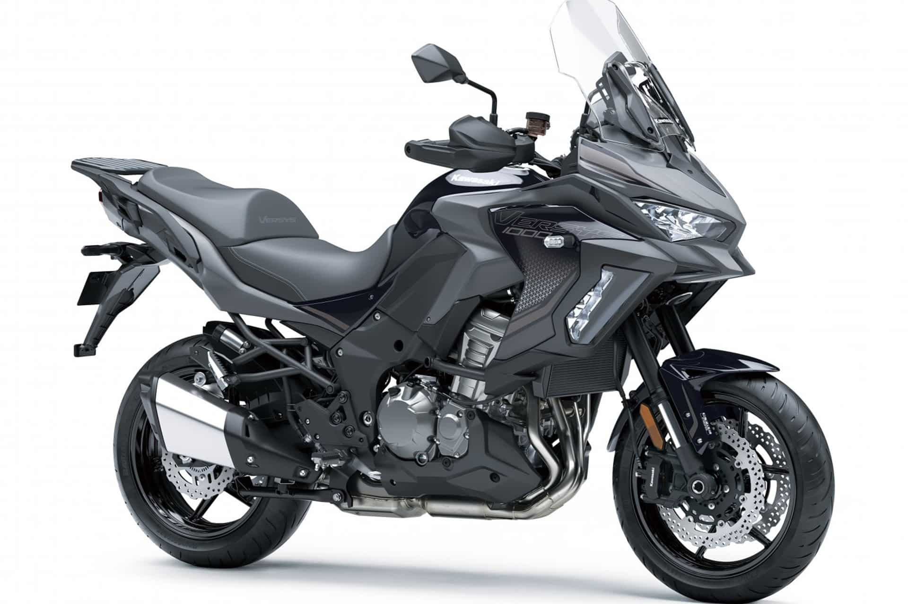

Kawasaki
Kawasaki es una marca japonesa con una amplia trayectoria y presencia global, ofreciendo motocicletas para distintos estilos de conducción. Sus modelos combinan diseño, potencia y tecnología, respaldados por una red de distribuidores y fichas técnicas completas que facilitan la elección del modelo adecuado.
Mucho más que motos
Además de motos, Kawasaki vende todoterrenos, motos de agua y motores.
Tipos de motos
Kawasaki ofrece diversos tipos de motos adaptados a distintos estilos de conducción:
Naked
Las motos naked de Kawasaki combinan estilo y rendimiento, ideales para una conducción urbana y placentera.
Algunos ejemplos destacados son la Kawasaki Z900RS, la Z650 y la Z900, que ofrecen un equilibrio entre potencia y maniobrabilidad.



Deportivas
Las motos deportivas de Kawasaki destacan por su velocidad y agilidad, perfectas para los amantes de la adrenalina y la competición.
Entre los modelos más populares y potentes se encuentran la Kawasaki Ninja ZX-10R, la Ninja ZX-6R y la Ninja H2, que ofrecen un rendimiento excepcional en pista y carretera.



Trail
Las motos trail de Kawasaki son versátiles, combinando características de carretera y campo.
Algunos ejemplos son la Kawasaki KLE500, la KLE500 SE y la Versys 1000.


